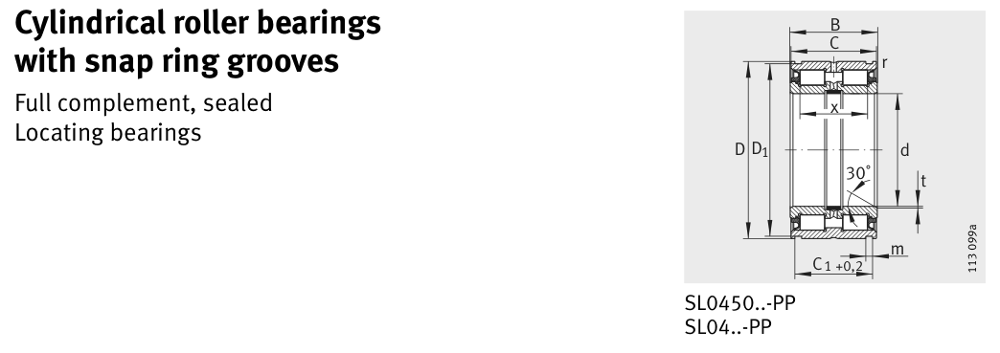

Original catalogue drawing - FAG Schaeffler HR 1, page 458

Scanned from the manufacturer catalogue page listing this part number. All part numbers printed on that table share the same drawing.
Scale cross-section
Blue = inner / outer ring, yellow = rolling element. Drawn to scale from this part's own
dimensions for selection reference only - not a manufacturing or assembly drawing.
Dimension table (mm / inch)
Symbol
Dimension
mm
inch
d
Bore diameter
95
3.7402
D
Outside diameter
145
5.7087
B
Inner-ring / bearing width
67
2.6378
C
Cup / outer-ring width
66
2.5984
r
Chamfer (min)
0.6
0.0236
Notes
Weights are given in kg. Load ratings are shown in both the original catalogue units and the converted value (1 N = 0.2248 lbf). Data is provided for selection reference only - confirm against the latest official catalogue before ordering.
Main dimensions
Bore d (mm)
95
Outside dia. D (mm)
145
Width B (mm)
67
Cup width C (mm)
66
Inner-ring OD d1 (mm)
113.35
Inner-ring shoulder dia. D1 (mm)
142
Load ratings & speeds
Basic dynamic load rating Cr (lbs)
70815
Basic static load rating Cor (lbs)
119149
Basic dynamic load rating Cr (N)
315000
Basic static load rating C0r (N)
530000
Fatigue limit load Cur (N)
71000
Limiting speed nG (rpm)
1,100
Weight
Weight (kg)
3.88
Mounting dimensions (fillets / shoulders)
Housing fillet r max (mm)
0.6
Bearing life (ISO 281 basic rating life)
C / P
Equivalent load P (N)
L10 (106 rev)
L10h at 300 rpm
4
78,750
102
5,644
6
52,500
392
21,805
8
39,375
1,024
56,889
10
31,500
2,154
119,691
15
21,000
8,323
462,415
Basic rating life per ISO 281: L10 = (C/P)10/3 with C = 315,000 N. Hours = L10 x 106 / (60n). Life-modification factors for lubrication, contamination and temperature (aISO) are not included.
Source & traceability
Brand
FAG
Source catalogue
FAG / Schaeffler Rolling Bearings HR 1
Catalogue page
p.458 (dimensions)
Load ratings in newtons, fatigue limit load Cur, limiting speed nG and reference speed nB.
Send us the quantity you need and we will come back with price and
lead time, normally within 24 hours. Equivalent parts from other brands can be quoted at the same time.